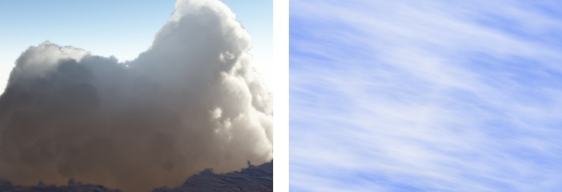
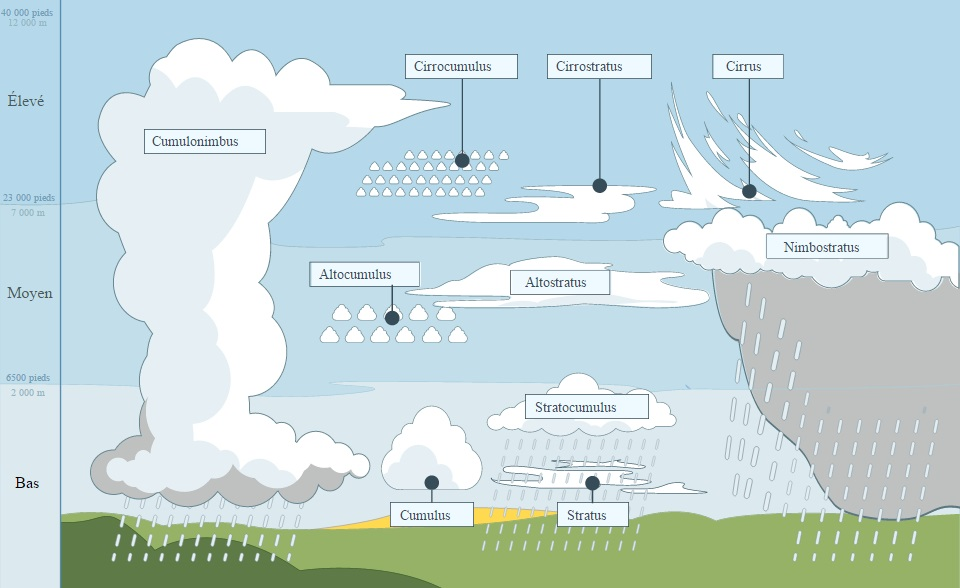
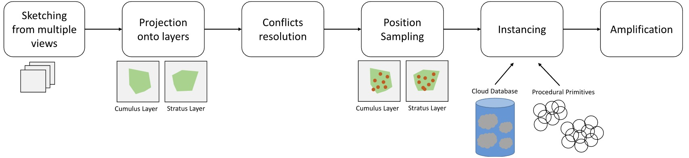
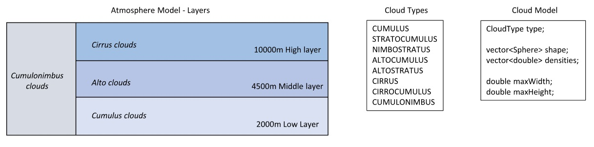
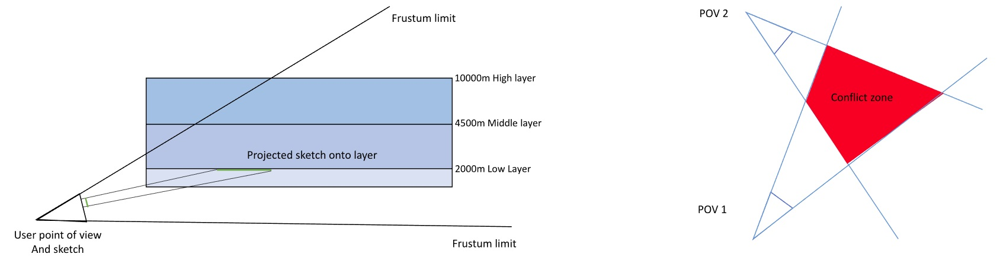
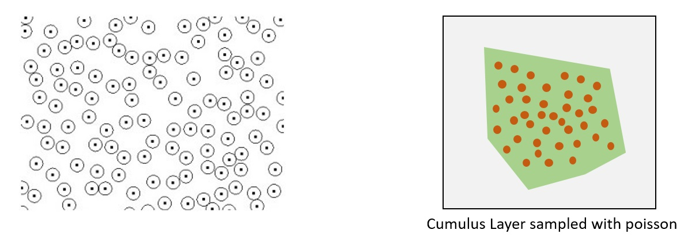

Axel Paris - Research Scientist
Home
Publications
Email
Twitter
Atmosphere Modeling by Sketching
March 10, 2018. Last updated on June 21, 2019.
This work was done during my third year internship to complete my bachelor degree (2015) with one friend of mine also an intern.
I worked for three month at LIRIS, France in the Geomod team. The goal was to develop an atmosphere model only from sketching on
screen with different brushes. We rapidly focus on the atmosphere modeling and let the sketching part aside because it was more
of a programming challenge than research. First, let’s take a look at the state of the art in clouds and some scientific background
on atmosphere and clouds.
State of the Art
Atmosphere and clouds have been studied for a long time, but there was no work that focused on the modeling of a coherent atmosphere
from a global point of view. There was as always simulation, procedural generation and hand crafted clouds. Bouthors worked on
representing cumulus clouds as a set of spherical sphere defined by an implicit field which can deform under the influence of neighbor particles.
Schpok worked on the rendering of other types as well. Very recently, Webanck et al. proposed an global atmosphere model from a
morphing point of view. They are the first to propose a large scale atmosphere model and user control. Our work was more oriented
toward the control than the simulation and we did not investigate animation or time management.

Some clouds rendered by Bouthors et Al. (left) and Schpok et Al. (right)
Atmosphere, Clouds

Figure showing the different types of cloud and altitude ranges. We can then extract a few types and layer to create
our model. See Wikipedia for more information on this topic.
Earth atmosphere is made of multiple layers contains many things. We rapidly focused on clouds since it is the most observed
phenomena and probably the one with the most impact. There are different types of clouds having their own properties:
- Cumulus, or fluffy clouds are the most known type. They appears at low altitudes, typically below 2000m.
- Alto clouds, appearing as globular masses or rolls in layers or patches.
- Cirrus clouds characterized by thin, wispy strands at high altitudes.
- Cumulonimbus clouds, something I like to call multi-layer clouds, going through every sky layers because there are huge.
Pipeline
To allow the user enough control in the scene, we adopted a sketching approach. The user would draw cloud densities on the
screen wherever they wanted, and the application would translate this into a coherent atmosphere model made of clouds. The user
should also be able to specify shadow or sunny area on the screen and the application would take care of all this, solve conflicts
between views, and propose a final atmosphere model ready for offline or real time rendering. We developed the following pipeline
to solve these problems:

The big picture of the pipeline showing every step of the program.
Atmosphere Model

Our atmosphere model is divided in 4 layers that can contains only certain types of clouds, which are modeled as
an array of Spheres/Densities representing the shapes. Extra parameters specify the maximum size of the cloud.
Sky layers were implemented as 3D scalar fields, storing different information depending where we are in the pipeline. A
possible mistake during the modeling we made was trying to create too much cloud types as you can see on the figure. Each of
these has different properties, but for a three month internship we could have focused on cumulus, alto et cirrus clouds only.
The model is quite simple and based on the idea that clouds will be represented as a set of spheres, and therefore rendered
as well from this representation. This proved to be the main difficulty when we got results with our spheres : how to make a
proper rendering from this ? The Geomod team had no rendering pipeline for clouds at the time. Me and my friends worked on
cloud rendering sooner this year and got interesting results, but the rendering was not ready and had bug to fix
(and it is still true today). At the time, cloud rendering became very popular thanks to Guerrila Games and Horizon Zero
Dawn which features very realistic cloud rendering in real time.
Projection and Conflicts resolution
The first stage of our pipeline consisted of taking user sketches and translating these into densities in our atmosphere
model. To do that, we projected every pixel of the sketch onto the corresponding sky layers and fill densities in the
scalar fields. We also had a conflicts resolution stage, where we basically merged user constraints from different views:
the shadow and sunny area specified by the user could have intersection/conflicts zone that we solved by some ad hoc rules.
The next figure shows how the projection and the resolution work in the application.

Sampling, Instancing
At this point, we have our sky layers filled with densities. What we want to is actual cloud instances. To do that,
we need to compute candidate positions from our densities and then find a way to create a cloud from this position.
This stage is called Sampling. We use Poisson disk to sample our scalar field uniformly and get candidate positions.
The following figure show how Sampling works in our pipeline.

On the left, a example of Poisson sampling. On the right, our density scalar field sampled with Poisson disks.
Thanks to our sampling, we now have 2D candidate position for our clouds. We now have to determine the ones we keep as
well as the altitude of the cloud. This was done with a very naive algorithm that worked well enough for our goals.
We also made a refined version of this which is based on a cost function and various variables : visibility, projected
area on the screen, distance to camera, altitude etc… Which got interesting results to the cost of computation time.
I could get into a lot more details about the implementation, the refined version and the user constraints but it would
get quite complicated. Let’s just say that at the end of the internship, we had a LOT of parameters allowing the user
to tweak every stage of the pipeline, which was the point of the project : give user control to create better scene
with beautiful cloud formations.
Amplification
The last stage of the pipeline was not the simplest one. The whole idea of the project was to enable the user to
sketch different view on a scene but not everywhere : the application could provide some sort of amplification process
from the atmosphere generated from user sketch. We did this by sampling our scalar fields once again, deciding for
each position if a cloud could exist or not based on the existing clouds in the scene and their types, altitudes…
The process is quite naive and could be improved a lot, but we did not have enough time to investigate further this area.
Retrospective and Avenue for future work
I stumbled on the code a few days ago and thought the final result was good enough to make a blog post. If it inspires
you to make something, please let me know, I will be happy to see the results. To be honest, even years after the
internship, I am still ok with the work we have done. I may want to start over in the next year just to see how I
would make it now that I am more experienced.
There is a lot that cloud be done better: literally every stage of the pipeline use algorithm with a lot of space for
improvement and it’s what make it a very interesting project and avenue of research. I am sure artist would like such
a tool to place clouds in a scene. Non-organized ideas to improve:
- Find a way to render the clouds at the end of the pipeline. This was not the goal of the internship but it
would have motivate us a lot to see fancy screenshots of our work instead of red spheres everywhere.
- Change the projections and work only with 3D scalar field. At the time, we used some 2D approximations that
we could get rid of.
- Ask the user how to resolve conflicts instead of deciding ad hoc how to do it. This would be a pain to
program but would give the user full control of the pipeline.
- Cloud Instancing was very naive : we add a cloud ‘database’ (basically clouds created by hand) and procedural
methods to create clouds on the go as we needed, but the code was quite dumb. One could go full procedural or full database.
- As I already said, amplification could profit from a complete rework with more modern/smart methods.
- Multi Layer clouds were not investigated enough proportionally to their size.
References
Guerilla Games Cloud Rendering PDF
Modeling Cloud Shapes
A Real Time Cloud Modeling, Rendering and Animation system
Clouds, Wikipedia